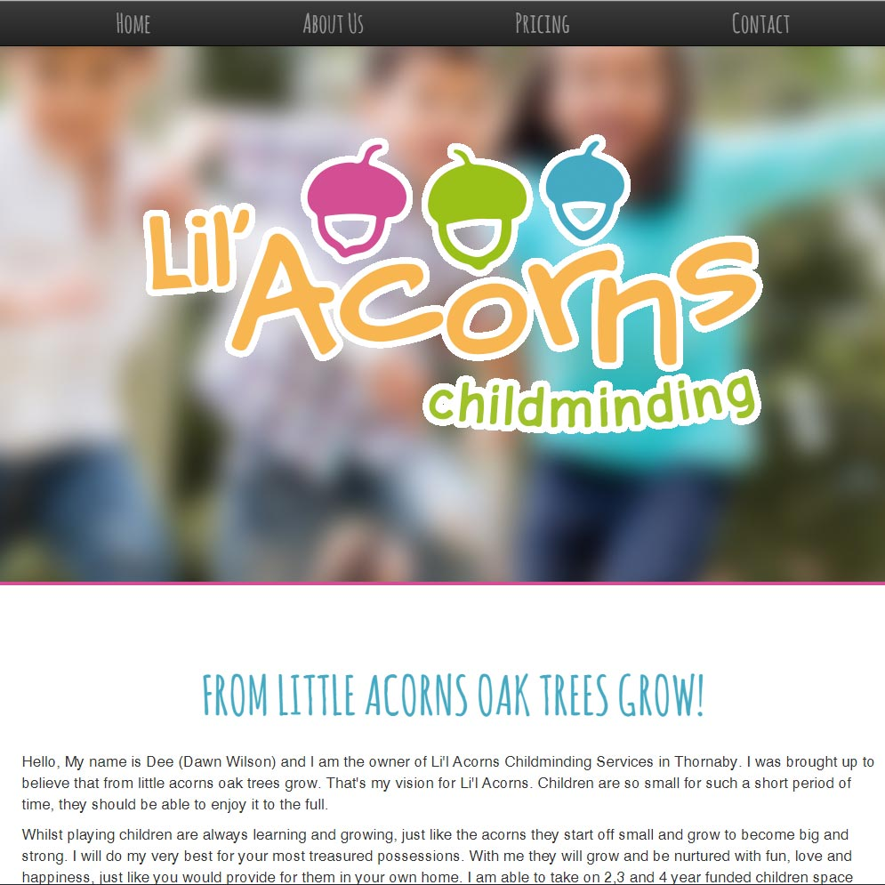
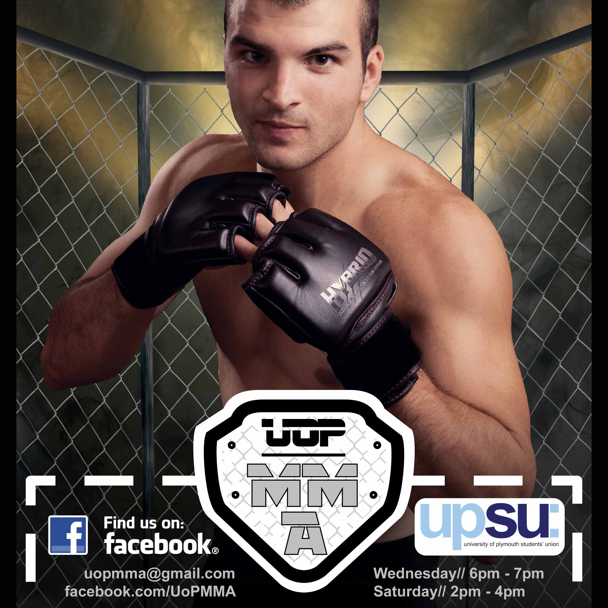
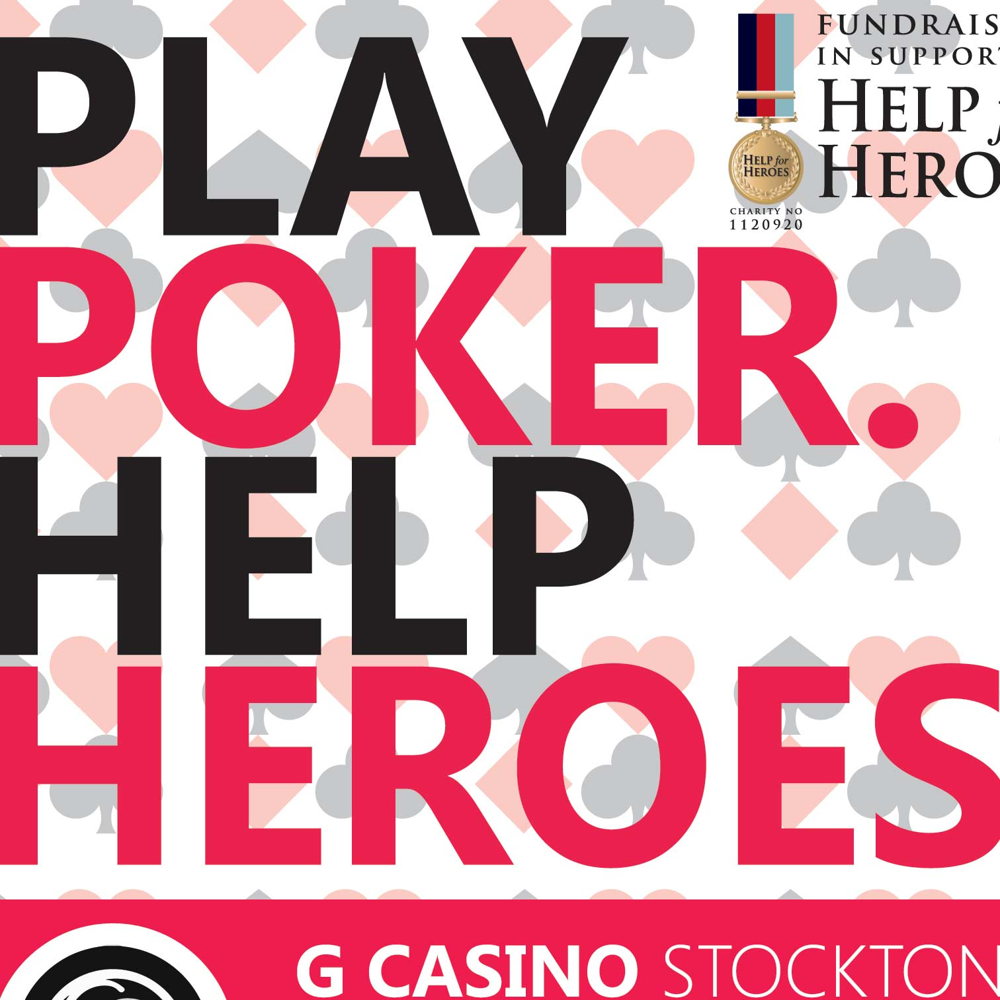

Hey there! Below is a select few samples of work I have done for client's and personal projects. Feel free to check them out!
Lil' Acorns was my first client website. The client wanted a simlpe responsive one page website which led to my decision of using Bootstap as the brick and mortar for the site. This was my first time using Bootstrap and I had a great amount of fun learning how frameworks work.
I also got to play around with the basics of Google Maps Javascript API. Logo was designed by the very tallented Abigail Taylor.
Occasionally I pick up the odd design job to keep my Adobe skills up to scratch. The client wanted a flyer creating to promote their Mixed Martial Arts club. The work was produced in Photosop using standard techniques for print production.
Primarily used layermasks for the creation of this peice.
This was my first client work created with Adobe Illustrator. I had a great amount of fun with this project and was happy with the end results. I learnt a lot about creating for print and repeating patterns.
Client wanted a flyer to promote a charity poker game that was being organised.
